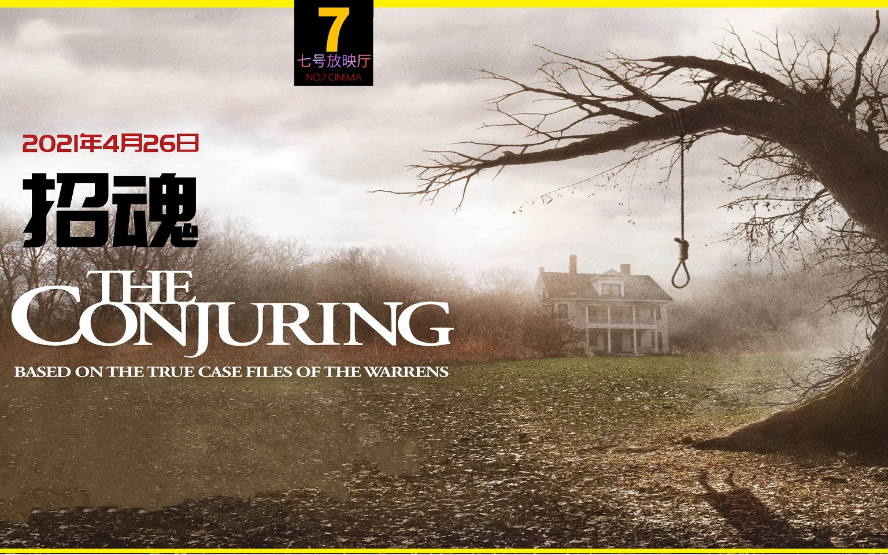

-
寂静之地
《寂静之地》是由约翰·卡拉辛斯基执导，艾米莉·布朗特、约翰·卡拉辛斯基、诺亚·尤佩领衔主演的恐怖电影。该片讲述了一家人带着幸存的两个孩子来到乡下躲避怪兽，他们用手语交流，每天在小心翼翼中度日的故事。
-
安娜贝尔
安娜贝拉·沃丽丝、阿尔法·沃德、布莱恩·豪威联袂主演。影片于2014年10月3日在北美上映。影片讲述鬼娃被男主人作为礼物带回了家，它的出现也为这个平静的家带来了神秘诡异的事件。
- 
招魂
《招魂》是一部由温子仁执导的美国惊悚悬疑电影，于2013年7月19日在美国上映。影片由朗·里维斯顿、维拉·法梅加和帕特里克·威尔森主演，改编自安德里亚·佩伦的原著小说《真实故事：黑暗之屋光之屋》。
-
僵尸
该片讲述的是一个演惯僵尸片但已无片可拍的老演员，并且家庭生活不幸，妻离子散的他搬到一座阴森诡谲的大厦，只想结束自己的生命，却遇上隐世的天师阿友后引发的故事。